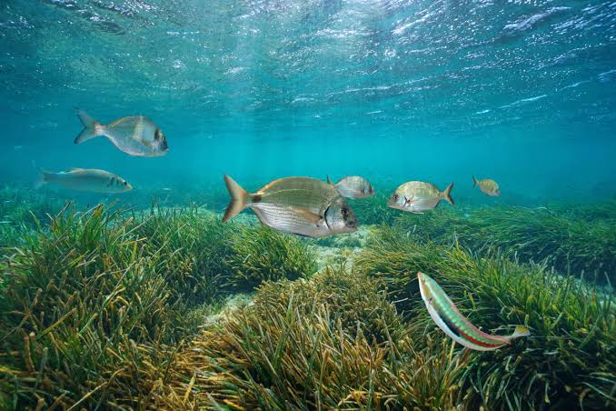

Réserve
de Cerbère-
Banyuls


⟹ Espace Naturel Marin Protégé ⟸
La Réserve naturelle marine de Cerbère-Banyuls est née d'une prise de conscience locale précoce. À la fin des années 1960, l'augmentation de la fréquentation touristique et l'intensification de certaines pratiques de pêche font craindre une dégradation rapide des fonds rocheux de la Côte Vermeille. Le maire de Cerbère sollicite alors les scientifiques du Laboratoire Arago de Banyuls-sur-Mer, héritier d'une tradition de recherche marine implantée sur cette côte depuis 1882.

La démarche se précise en 1971. Le Laboratoire Arago remet un rapport scientifique justifiant la création d'une « réserve biologique sous-marine » et soulignant la nécessité de protéger des espèces et habitats particulièrement menacés. Le conseil municipal de Cerbère se prononce favorablement ; en 1972, Banyuls-sur-Mer rejoint officiellement le projet. Une enquête publique est ouverte en 1973.
Le 26 février 1974, un arrêté interministériel crée officiellement la réserve. L'acte est pionnier : Cerbère-Banyuls devient le premier espace protégé strictement marin de France métropolitaine, sur une côte où la protection du milieu sous-marin ne disposait encore que de peu de précédents réglementaires. Dès 1974, un premier conseil de gestion est mis en place ; les premières bouées de balisage apparaissent en 1976.
Le 1er janvier 1977, la gestion est confiée au Département des Pyrénées-Orientales, qui devient ainsi l'un des premiers acteurs territoriaux français à administrer directement une réserve naturelle. La réserve couvre 650 hectares entre Banyuls-sur-Mer et Cerbère et s'étire sur plusieurs kilomètres de côte rocheuse.
Très vite, les gestionnaires constatent qu'une protection plus forte est nécessaire au cœur du dispositif. Avec l'accord des pêcheurs professionnels, un cantonnement de pêche à but scientifique au cap Rédéris est instauré à la fin des années 1970 ; son balisage est installé au début des années 1980. Cette « réserve intégrale », devenue zone de protection renforcée, constitue un laboratoire grandeur nature permettant de suivre l'évolution d'écosystèmes soumis à une pression humaine minimale.
En 1985, un premier conseil scientifique structure davantage le suivi des espèces et des habitats. Puis le décret n° 90-790 du 6 septembre 1990 remplace le texte de 1974. Issu d'une concertation entre administrations, scientifiques et usagers, il modernise la gouvernance et pérennise la zone de protection renforcée du cap Rédéris. La réserve devient progressivement une référence pour l'étude de « l'effet réserve », c'est-à-dire la restauration des peuplements et l'augmentation de l'abondance ou de la taille de certaines espèces lorsque les prélèvements sont limités.
Au fil des décennies, la mission s'élargit : surveillance, réglementation des usages, suivis scientifiques, accueil des plongeurs, sensibilisation des scolaires et du grand public, sentier sous-marin et coopération avec les pêcheurs. La protection concerne une mosaïque d'habitats méditerranéens — falaises et blocs rocheux, herbiers de posidonie, coralligène — qui explique l'exceptionnelle diversité biologique du secteur.
En 2018, la réserve reçoit une double reconnaissance internationale : son inscription sur la Liste verte de l'UICN est renouvelée et elle obtient le statut de Global Ocean Refuge. En 2024, elle célèbre ses cinquante ans. Un demi-siècle d'expérience en fait aujourd'hui un site historique de la conservation marine française, mais aussi un observatoire privilégié des effets du réchauffement de la Méditerranée et des transformations de la biodiversité.
Son histoire illustre un changement profond de regard : un espace autrefois considéré principalement comme zone de pêche et de loisirs est devenu un patrimoine naturel commun, dont la conservation repose sur l'association des collectivités, de l'État, des scientifiques et des usagers de la mer.
Créée le 26 février 1974, elle constitue le premier espace protégé strictement marin de France métropolitaine.
Département des Pyrénées-Orientales — Plan de gestion de la RNMCBSources documentaires : Département des Pyrénées-Orientales — histoire de la réserve ; Réserves Naturelles de France.
Le relief particulier de la réserve, avec un plateau continental étroit et des fonds atteignant 60 mètres à moins de deux kilomètres du rivage, crée une mosaïque d'habitats rares sur un espace restreint : herbiers de posidonie, roches littorales et coralligène se succèdent sur quelques centaines de mètres.
Intégralement marine, la réserve abrite près de 1 200 espèces animales et 500 espèces végétales. L'interdiction de la pêche depuis 1974 a permis la reconstitution spectaculaire de populations autrefois menacées, à l'image du mérou brun, protégé depuis 1993 et dont le moratoire de pêche a été prolongé de dix ans fin 2023.
Ce "laboratoire à ciel ouvert" sert également de référence scientifique pour comprendre l'évolution du milieu marin méditerranéen face aux pressions extérieures qui s'exercent sur le reste du littoral.
Réchauffement de la Méditerranée : la hausse des températures marines fragilise les herbiers de posidonie et le coralligène, à croissance très lente.
Espèces invasives : certaines algues exotiques concurrencent les habitats naturels et modifient l'équilibre des fonds marins.
Pression en périphérie : la surpêche et la fréquentation intense pratiquées juste en dehors des limites de la réserve continuent de peser sur les populations qu'elle abrite.
Fréquentation touristique : l'afflux de baigneurs, plongeurs et plaisanciers en été impose une surveillance constante pour faire respecter la réglementation.
Le sentier sous-marin de Peyrefite, près de Cerbère, permet une découverte guidée en snorkeling, accessible à toute la famille.
Les clubs de plongée agréés de Banyuls et Cerbère organisent des sorties encadrées à la découverte des mérous et du coralligène.
Des sorties en bateau au départ de Banyuls ou d'Argelès-sur-Mer permettent d'observer la réserve depuis la surface, en paddle ou en kayak.
Le Laboratoire Arago, à Banyuls-sur-Mer, propose un aquarium ouvert au public pour découvrir la faune et la flore de la Côte Vermeille.